Learn#
In this section, you can find tutorial notebooks that describe the internals of pyhgf, the theory behind the Hierarchical Gaussian filter, and step-by-step application and use cases of the model. At the beginning of every tutorial, you will find a badge  to run the notebook interactively in a Google Colab session.
to run the notebook interactively in a Google Colab session.
Theory#
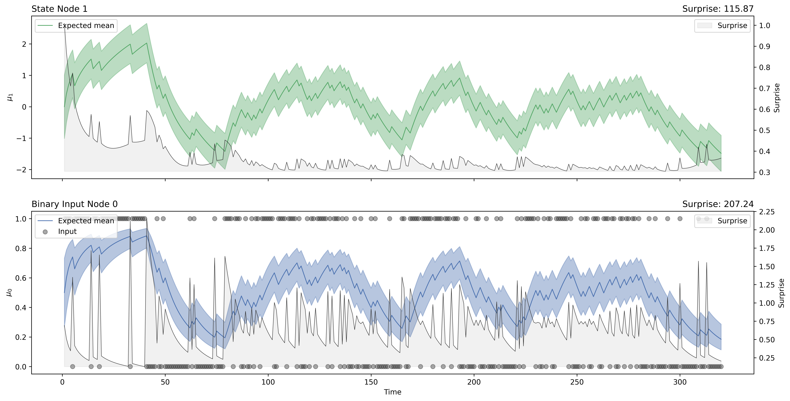
How the generative model of the Hierarchical Gaussian filter can be turned into update functions that update nodes through value and volatility coupling?

How to create and manipulate a network of probabilistic nodes for reinforcement learning? Working at the intersection of graphs, neural networks and probabilistic frameworks.
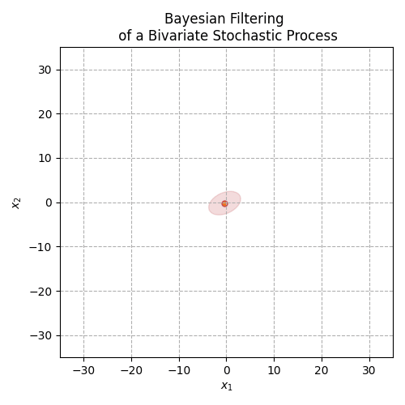
Predict, filter and smooth any distribution from the exponential family using generalisations of the Hierarchical Gaussian Filter.
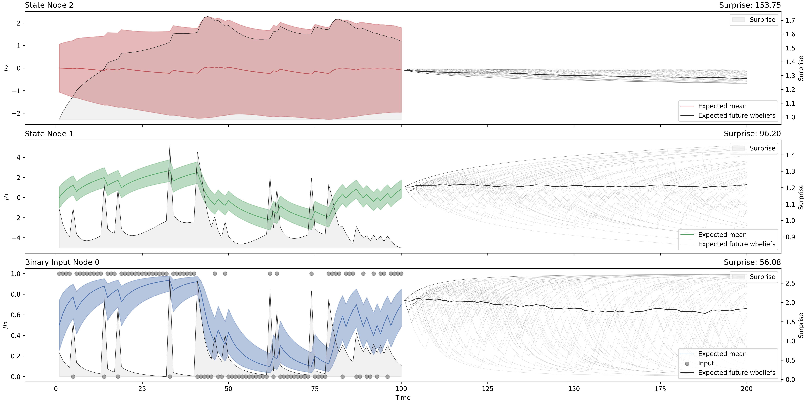
Planning and acting by simulating forward trajectories in predictive coding networks.

Learning in deep predictive coding networks using variational message passing for prospective configuration.
The hierarchical Gaussian filter#
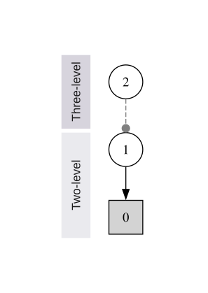
Introducing with example the binary Hierarchical Gaussian filter and its applications to reinforcement learning.
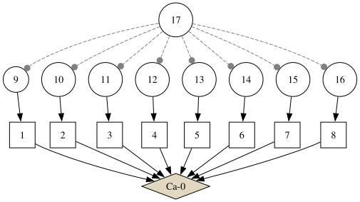
The categorical Hierarchical Gaussian Filter is a generalisation of the binary HGF to handle categorical distribution with and without transition probabilities.
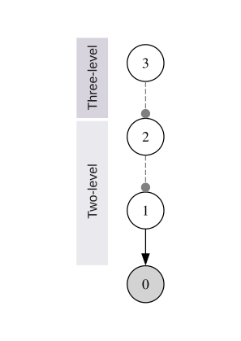
Introducing with example the continuous Hierarchical Gaussian filter and its applications to signal processing.
Tutorials#
Advanced customisation of predictive coding neural networks and Bayesian modelling for group studies.
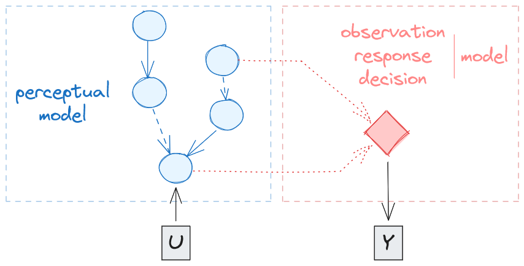
How to adapt any model to specific behaviours and experimental design by using custom response functions.
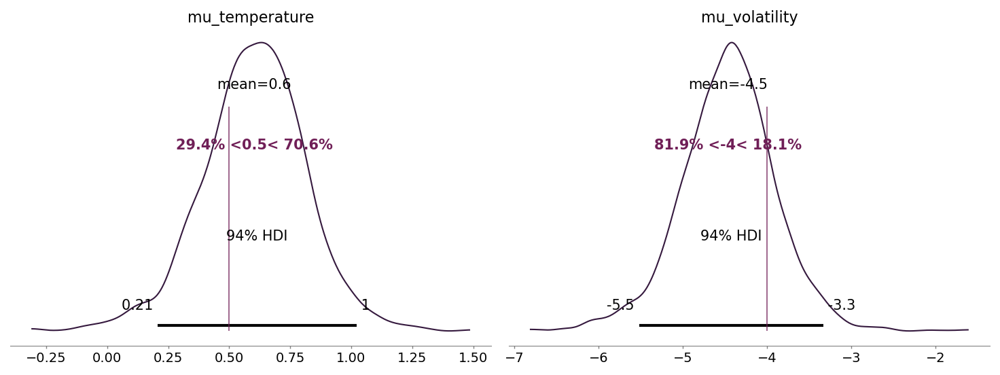
How to use any predictive coding network as a distribution to perform hierarchical inference.
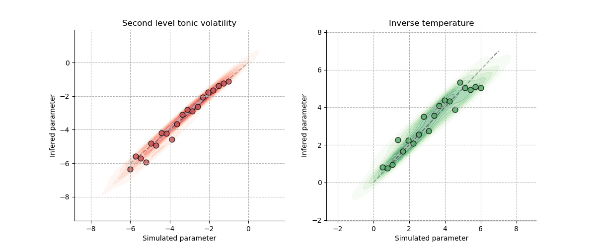
Recovering parameters from a known generative model.
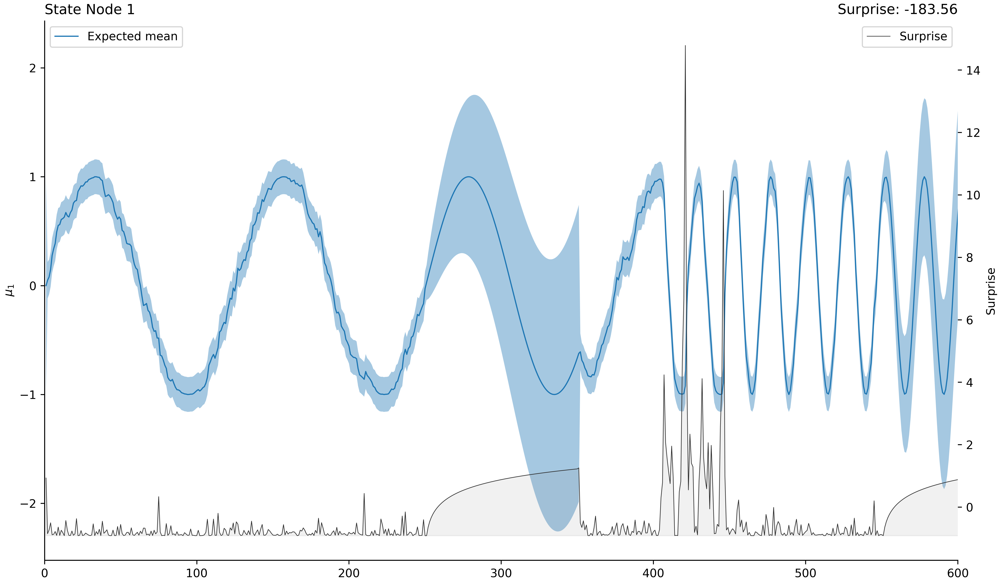
Recovering parameters from the generative model and using the sampling functionalities to estimate prior and posterior uncertainties.
Use cases#
Examples of possible applications and extensions of the standards Hierarchical Gaussian Filters to more complex experimental designs
Application of continuous Bayesian filtering to cardiac physiological recordings to infer interoceptive beliefs and their volatility.
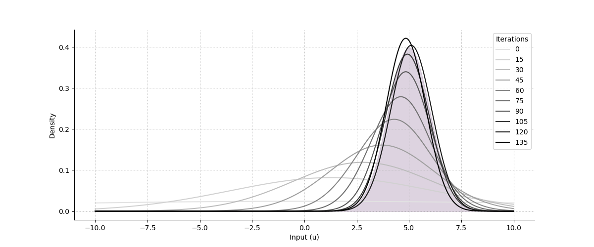
Dynamic inference over both the mean and variance of a normal distribution.
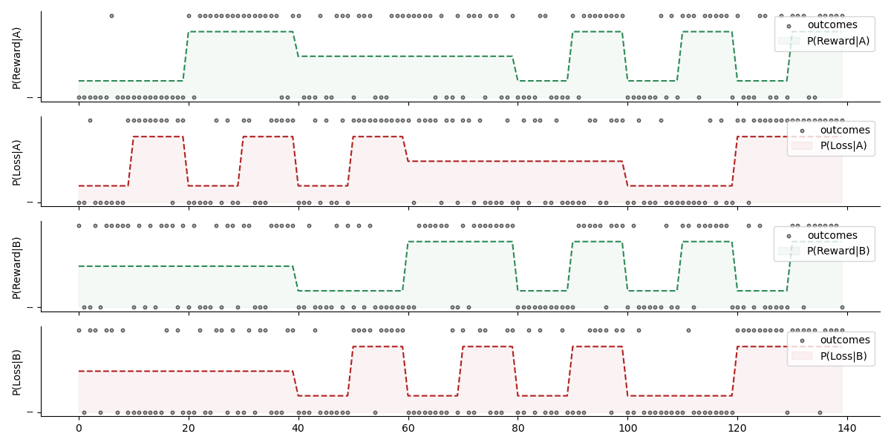
A generalisation of the binary Hierarchical Gaussian Filter to multiarmed bandit where the probabilities of the outcomes are evolving independently.
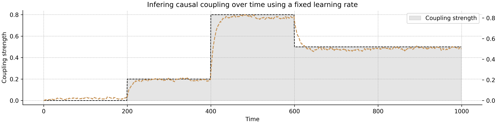
Deriving a causal discovery prediction error to track the causal coupling strength between two random variable over time.
Using autoconnection strength to model biases in the Iowa Gambling Task.
Exercises#
Hand-on exercises for theComputational Psychiatry Course (Zurich) to build intuition around the generalised Hierarchical Gaussian Filter, how to create and manipulate probabilistic networks, design an agent to perform a reinforcement learning task and use MCMC sampling for parameter inference and model comparison—about 4 hours.
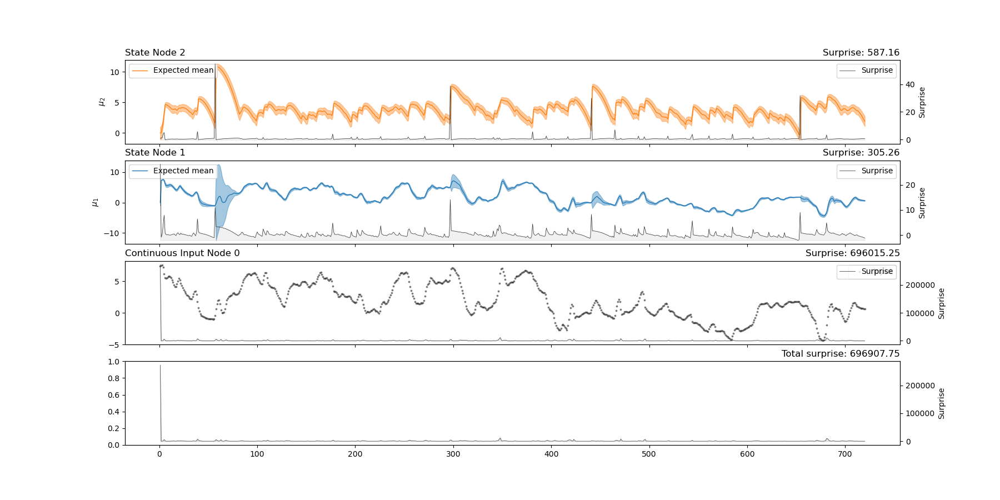
Theoretical introduction to the generative model of the generalised Hierarchical Gaussian Filter and presentation of the update functions (i.e. the first inversion of the model).
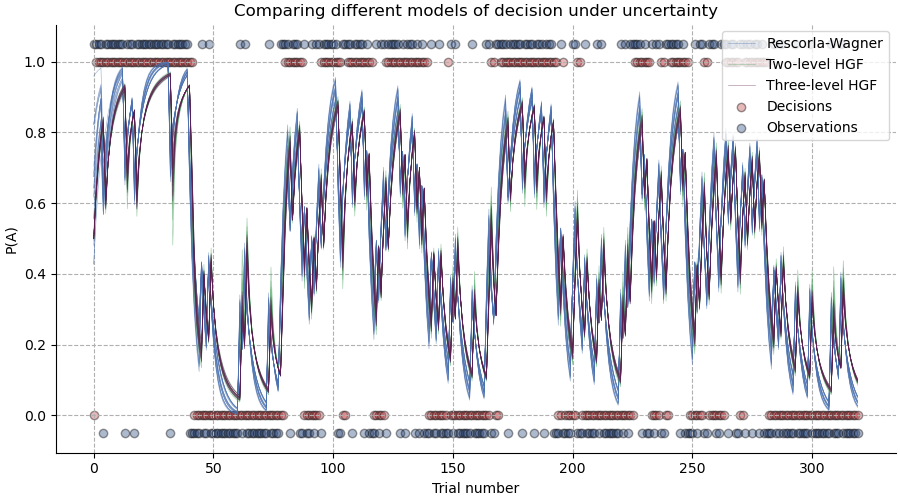
Practical application of the generalised Hierarchical Gaussian Filter to reinforcement learning problems and estimation of parameters through MCMC sampling (i.e. the second inversion of the model).